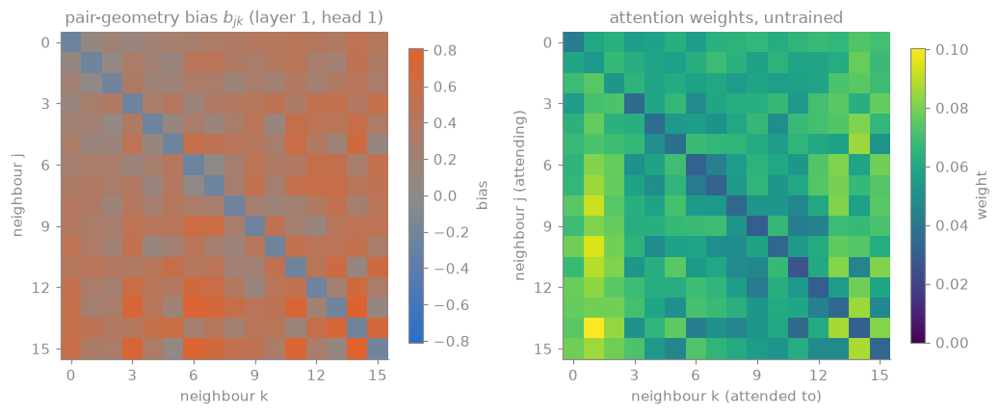
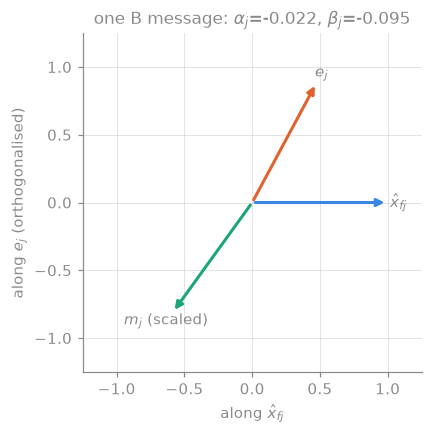
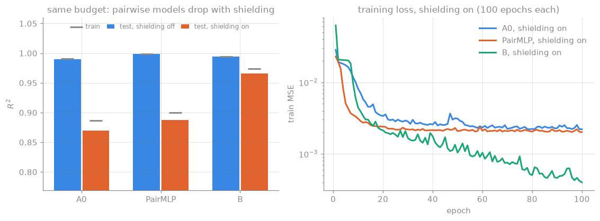
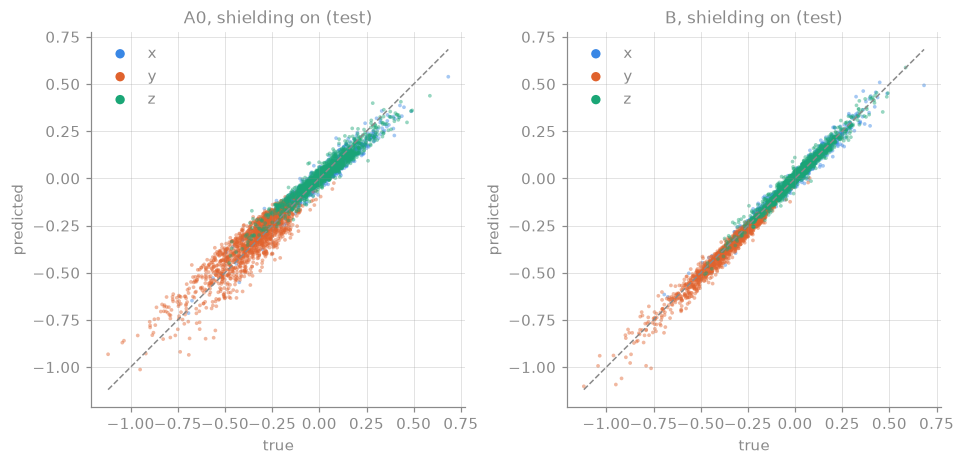
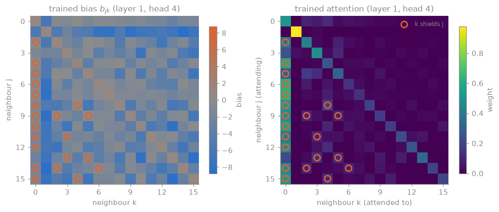
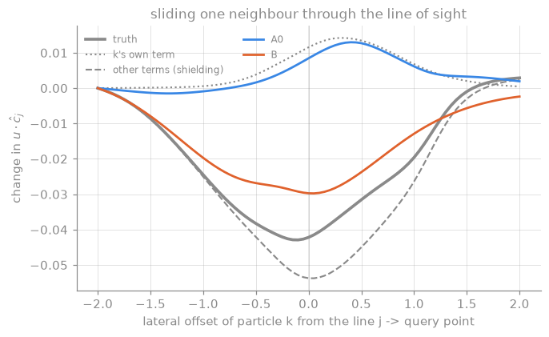

Invariant attention with a pair-geometry bias: model B#
What you will learn
How to make a transformer exactly E(3)-equivariant. The learned parts see only distances and dot products, and the output is built as invariant coefficients times the input vectors, \(\mathbf u = \sum_j \alpha_j \mathbf x_{fj} + \beta_j \mathbf e_j\).
How a pair-geometry bias lets each neighbour’s attention depend on where the other neighbours sit, and how to check every symmetry of the model numerically, including translations and the neighbour order.
Why this fixes the problem of Lesson 05a. On the shielding toy, trained for the same number of epochs to a plateau, model B keeps most of its accuracy while A0 and another pairwise model hit a ceiling, and B’s attention learns to look at the particles that shield.
Prerequisites: Lesson 02c (every A0 message lies in
\(\mathrm{span}(\mathbf x_{fj}, \mathbf e_j)\)), Lesson 05a (shielding and its
neighbour-set target) and the transformer lessons 05b to
05e (scaled dot-product attention, heads and masks, permutation symmetry, the
pre-norm block). For irreps and why scalars
(0e) and polar vectors (1o) behave as they do under rotations and reflections, see the
MolSSI e3nn course.
import copy, os, time
import numpy as np
import matplotlib.pyplot as plt
import torch
from course_utils import models as mdl, training as tr, metrics as mt, plotting as cplt
from course_utils.attention import attention, split_heads, merge_heads
from course_utils.equivariance import (check_equivariance, check_invariance, check_permutation,
check_translation, span_residual, report)
from course_utils.models import neighbour_invariants, pair_invariants
torch.set_num_threads(min(4, os.cpu_count() or 1)) # small models: a few threads are enough
T0 = time.time()
1. The recipe: invariants in, invariant coefficients out#
A0 builds each neighbour’s message from that neighbour alone, then adds the messages up. Lesson 05a showed what this cannot do. When particle \(k\) sits between particle \(j\) and the query point, the flow that \(j\) sends to the point is weakened, and a sum of independent terms \(\mathbf m_j\) cannot know that \(k\) is there. Attention lets the neighbours look at each other (Lesson 05b). The question for this lesson is how to do that without losing exact equivariance.
Model B answers it in three steps.
Step 1: invariant tokens. Each neighbour \(j\) becomes a token whose features are invariant under rotations and reflections:
where \(\rho\) is the density ratio and \(\mathbf x_{fj} = \mathbf x_f - \mathbf r_j\) is the offset from the
centre \(\mathbf r_j\) of particle \(j\) to the query point \(\mathbf x_f\) (the notation of Lesson 05a). The
research model also appends a radial-basis expansion of the distance \(|\mathbf x_{fj}|\) to each token, which
gives the network a smoother handle on distance. MiniB leaves it out to stay small; it changes nothing about
the symmetry.
Step 2: invariant pair geometry. Each pair of neighbours \((j,k)\) gets five numbers that describe where the two sit relative to each other and to the query point:
A small MLP turns \(P_{jk}\) into one number \(b^{(\ell,h)}_{jk}\) per layer \(\ell\) and head \(h\). That number is added to the attention logits, in the same place as an additive float mask (Lesson 05c):
The bias is how the geometry enters. Without it, a token knows its own distance and angle to the query point but not where the other neighbours are relative to it.
Step 3: invariant coefficients times polar basis vectors. After the transformer blocks, a linear head turns each token into two numbers \((\alpha_j, \beta_j)\), and the prediction is
Why this is exactly equivariant. For any orthogonal matrix \(g\) (rotation or reflection), \((g\mathbf a)\cdot(g\mathbf b) = \mathbf a\cdot\mathbf b\) and \(|g\mathbf a| = |\mathbf a|\). Every number the learned layers see is a norm or a dot product, so \(I_j\), \(P_{jk}\), the attention weights and \((\alpha_j,\beta_j)\) do not change at all. Only the basis vectors move:
Translations do nothing because the inputs are offsets \(\mathbf x_{fj} = \mathbf x_f - \mathbf r_j\), which do not change when the query point and every centre \(\mathbf r_j\) shift together. Relabelling the neighbours permutes the tokens. Attention without positional encodings is permutation-equivariant (Lesson 05d), and the final sum is invariant.
Why the output form is not a restriction. Lesson 02c showed that each A0 message already has this form. For a single pair, it is the most general vector that symmetry allows. The same holds for many vectors at once: any O(3)-equivariant vector function of the vectors \(\{\mathbf x_{fj}, \mathbf e_j\}\) can be written as a sum of those vectors with invariant coefficients [Villar et al., 2021]. A0 and B share the form. The difference is what the coefficients may depend on: in A0, \(\alpha_j\) and \(\beta_j\) depend on neighbour \(j\) alone, and in B they depend on all \(M\) neighbours.
Let us generate six toy suspensions and gather one batch of inputs. As in Lesson 05a, the shielding rule will be applied later, to the \(M\) neighbours a model sees, so the suspensions themselves are generated without it.
SIGMA, WIDTH = 0.95, 1.0 # shielding strength and width, as in Lesson 05a
M = 16
t = time.time()
snaps = cu.make_snapshots(6)
cfg = snaps[0].config
print(f"generated 6 snapshots in {time.time() - t:.1f} s; "
f"{snaps[0].n} spheres each, volume fraction {cfg.volume_fraction:.3f}")
snap = snaps[0]
rng = np.random.default_rng(0)
pts = snap.sample_exterior(64, rng=rng)
inp = cu.neighbour_inputs(pts, snap.positions, snap.slip, snap.phi_local, snap.density_ratio, M) # float64
args = (inp["scalars"], inp["e_j"], inp["x_fj"])
KINDS = ("scalar", "vector", "vector")
print({k: tuple(v.shape) for k, v in inp.items()})
generated 6 snapshots in 1.1 s; 96 spheres each, volume fraction 0.098
{'scalars': (64, 16, 3), 'e_j': (64, 16, 3), 'x_fj': (64, 16, 3), 'idx': (64, 16)}
First, the two feature maps. A check of invariance must pass at round-off level:
check_invariance(lambda s, e, x: neighbour_invariants(s, e, x)[0], args, KINDS, name="token invariants I_j")
check_invariance(lambda s, e, x: pair_invariants(e, x), args, KINDS, name="pair invariants P_jk");
PASS token invariants I_j: max error 4.7e-16 (tol 1e-12) [5 random g in O(3), det = [-1, 1]]
PASS pair invariants P_jk: max error 6.0e-16 (tol 1e-12) [5 random g in O(3), det = [-1, 1]]
2. Failure before success: two tempting shortcuts#
Before we build model B correctly, here are two ways to get it wrong. Both look reasonable, and both are easy to write.
To compare them, we write model B’s forward pass out step by step. The function below takes a MiniB and uses
its parameters, and the pair_fn argument decides which pair features feed the bias. This is also the reference
implementation for Section 3.
def b_forward(model, scalars, e_j, x_fj, pair_fn=pair_invariants):
"""Model B written out. Returns u (B, 3), (alpha, beta) (B, M, 2), bias (B, L, H, M, M), weights [L x (B, H, M, M)]."""
B, M_ = x_fj.shape[:2]
I, _ = neighbour_invariants(scalars, e_j, x_fj) # step 1: invariant tokens (B, M, 6)
h = model.embed(I) # (B, M, W)
P = pair_fn(e_j, x_fj) # step 2: pair features (B, M, M, 5)
bias = model.bias_mlp(P).permute(0, 3, 1, 2).reshape(B, model.depth, model.heads, M_, M_)
weights = []
for l, blk in enumerate(model.blocks): # pre-norm transformer blocks (Lesson 05e)
q, k, v = blk.attn.qkv(blk.ln1(h)).chunk(3, dim=-1)
q, k, v = (split_heads(z, model.heads) for z in (q, k, v))
a, w = attention(q, k, v, bias=bias[:, l], return_weights=True)
h = h + blk.attn.out(merge_heads(a))
h = h + blk.ffn(blk.ln2(h))
weights.append(w)
ab = model.head(model.ln_f(h)) # step 3: invariant coefficients
u = (ab[..., :1] * x_fj + ab[..., 1:] * e_j).sum(1) # times polar basis vectors
return u, ab, bias, weights
torch.manual_seed(0)
B_model = mdl.MiniB(width=32, depth=2, heads=4).double().eval()
Shortcut 1: feed the raw separation to the bias. The separation \(\mathbf x_{fj}-\mathbf x_{fk}\) is the most direct description of where \(k\) is relative to \(j\), so why not give its three components to the pair MLP? The reason is that the components are not invariant: they change when we rotate the suspension, so the attention weights change too.
def raw_pair_features(e_j, x_fj):
sep = x_fj[:, :, None] - x_fj[:, None] # (B, M, M, 3): a VECTOR per pair
return torch.cat([sep, pair_invariants(e_j, x_fj)[..., 1:3]], -1)
try:
check_equivariance(lambda s, e, x: b_forward(B_model, s, e, x, raw_pair_features)[0], args, KINDS,
name="B with raw separation bias")
except AssertionError as err:
print("caught:", err)
FAIL B with raw separation bias: max error 4.5e-02 (tol 1e-12) [5 random g in O(3), det = [-1, 1]]
caught: B with raw separation bias: equivariance error 4.507e-02 >= tol 1.0e-12
Shortcut 2: predict three Cartesian numbers. A transformer normally ends with Linear(width, 3). With
invariant tokens, the three numbers it produces are invariant, and an invariant vector cannot rotate with the
input. The output then always points along the fixed lab axes.
torch.manual_seed(1)
head3 = torch.nn.Linear(32, 3).double()
def b_cartesian_head(s, e, x):
"""Same invariant trunk as B, but the head emits (u_x, u_y, u_z) per token directly."""
I, _ = neighbour_invariants(s, e, x)
h = B_model.embed(I)
bias = B_model.bias_mlp(pair_invariants(e, x)).permute(0, 3, 1, 2).reshape(len(x), 2, 4, M, M)
for l, blk in enumerate(B_model.blocks):
h = blk(h, bias=bias[:, l])
return head3(B_model.ln_f(h)).sum(1)
try:
check_equivariance(b_cartesian_head, args, KINDS, name="B with a Cartesian head")
except AssertionError as err:
print("caught:", err)
FAIL B with a Cartesian head: max error 1.8e+00 (tol 1e-12) [5 random g in O(3), det = [-1, 1]]
caught: B with a Cartesian head: equivariance error 1.836e+00 >= tol 1.0e-12
Both errors are far above round-off (between about \(10^{-2}\) and \(1\)), so the check catches them. The two fixes are the two rules of model B: only invariants go into learned layers, and vectors come out only as invariant multiples of input vectors.
3. Model B, built correctly#
Our step-by-step version must agree with course_utils.models.MiniB:
with torch.no_grad():
u_ref = B_model(*args)
u_ours, ab, bias, weights = b_forward(B_model, *args)
print(report("b_forward vs MiniB", float((u_ours - u_ref).abs().max()), 1e-12, "same parameters, float64"))
print(f"parameters: MiniB {mdl.param_count(B_model):,}")
PASS b_forward vs MiniB: max error 0.0e+00 (tol 1e-12) [same parameters, float64]
parameters: MiniB 18,730
Here is what one query point sees, with the neighbours sorted from nearest to farthest. On the left is the pair-geometry bias \(b_{jk}\) for the first layer and head, and on the right the attention weights that result. Each row is a token \(j\) and shows how it spreads its attention over the other neighbours. This model is untrained, yet the bias is not small: it is of the same size as the logits \(\mathbf Q_j\cdot\mathbf K_k/\sqrt d\). The diagonal stands out because for the self pair \(k=j\) the separation is zero and the cosines are one, a corner of feature space that no other pair reaches. Untrained weights say nothing about the physics; Section 4 shows the same panels after training.

3.1 The symmetry checks#
Why the checks should pass. Everything rests on one identity. For any rotation or reflection \(g\), a \(3\times3\) matrix with \(g^{\mathsf T}g = I\), and any two vectors,
The components of both vectors change, their dot product does not, and a length is the square root of a dot product. Every entry of the token features \(I_j\) and of the pair features \(P_{jk}\) is a length or a dot product of vectors that turn together, or a scalar that never changes. So the tokens are invariant, and with them the queries and keys, the bias, the score and the weight:
(layer and head indices dropped), and after the blocks the coefficients \((\alpha_j, \beta_j)\). Vectors enter only in the last line, \(\mathbf u = \sum_j\alpha_j\,\mathbf x_{fj} + \beta_j\,\mathbf e_j\), which therefore becomes \(g\,\mathbf u\). Relabelling the neighbours permutes the rows and columns of every table together, so each neighbour keeps its own \((\alpha_j, \beta_j)\), and a sum does not care about order.
Animation T5, geometry bias and invariance. A dot product \(\hat{\mathbf x}_{fj}\cdot\mathbf e_k\) is written out with its three components and summed; both arrows are turned by \(g\), every component changes and the sum does not. A pair of neighbours \((j, k)\) then gets its five invariants \(P_{jk}\), one distance and four dot products, and a small MLP maps them to one number, the bias \(b_{jk}\). For the eight neighbours of one query point the table of \(\mathbf Q_j\cdot\mathbf K_k/\sqrt d\) (layer 1, head 1) receives the bias map, and a softmax along each row gives the weights \(w_{jk}\). Notice the comparison that follows. The neighbours turn through a full circle and are then mirrored. The left weight map, model B with invariant pair features, does not move, and its measured change is rounding error. The right map is the same model fed the raw components of the separation (shortcut 1 of Section 2), and it changes with the viewing direction. The coefficients \((\alpha_j, \beta_j)\) stay frozen during a further turn while the prediction \(\mathbf u\) turns with the input, and relabelling the neighbours moves the rows of the table but not the sum. The model is this lesson’s untrained MiniB, so the clip is about symmetry, not accuracy. Particles are drawn as centre markers in a projection. The clip is drawn on a dark stage in both page themes and has a voice-over with captions.
Each claim from Section 1 gets its own check, with reflections included:
coef = lambda s, e, x: B_model.coefficients(s, e, x)
attw = lambda s, e, x: torch.stack(b_forward(B_model, s, e, x)[3])
check_invariance(coef, args, KINDS, name="coefficients (alpha_j, beta_j)")
check_invariance(attw, args, KINDS, name="attention weights, all layers and heads")
check_equivariance(B_model, args, KINDS, name="MiniB output u")
check_equivariance(B_model.messages, args, KINDS, name="MiniB messages alpha_j x_j + beta_j e_j")
check_permutation(coef, args, axis=1, mode="equivariant", name="coefficients under relabelling")
check_permutation(B_model, args, axis=1, mode="invariant", name="MiniB output under relabelling");
PASS coefficients (alpha_j, beta_j): max error 1.4e-16 (tol 1e-12) [5 random g in O(3), det = [-1, 1]]
PASS attention weights, all layers and heads: max error 8.3e-17 (tol 1e-12) [5 random g in O(3), det = [-1, 1]]
PASS MiniB output u: max error 5.0e-16 (tol 1e-12) [5 random g in O(3), det = [-1, 1]]
PASS MiniB messages alpha_j x_j + beta_j e_j: max error 2.1e-16 (tol 1e-12) [5 random g in O(3), det = [-1, 1]]
PASS coefficients under relabelling: max error 1.1e-16 (tol 1e-12) [3 random permutations of axis 1 (equivariant)]
PASS MiniB output under relabelling: max error 5.0e-16 (tol 1e-12) [3 random permutations of axis 1 (invariant)]
The E in E(3) also includes translations. To test them, we shift the query points and all particle centres by the same random vector, rebuild the neighbour lists from scratch, and run the model again:
def b_from_positions(points, positions):
i = cu.neighbour_inputs(points, positions, snap.slip, snap.phi_local, snap.density_ratio, M)
with torch.no_grad():
return B_model(i["scalars"], i["e_j"], i["x_fj"]).numpy()
check_translation(b_from_positions, pts, snap.positions, name="MiniB, positions -> u");
PASS MiniB, positions -> u: max error 5.0e-16 (tol 1e-12) [3 random translations]
Finally, the link to Lesson 02c. Each of B’s messages \(\alpha_j\mathbf x_{fj}+\beta_j\mathbf e_j\) still lies in the plane of \(\mathbf x_{fj}\) and \(\mathbf e_j\), exactly as A0’s messages do:
with torch.no_grad():
msgs = B_model.messages(*args)
res = span_residual(msgs, inp["x_fj"], inp["e_j"])
print(report("B messages in span(x_fj, e_j)", float(res.max()), 1e-12, f"{res.numel()} messages"))
PASS B messages in span(x_fj, e_j): max error 4.5e-15 (tol 1e-12) [1024 messages]

out-of-plane part of this message relative to its length: 6.9e-17
So B has the same per-message form as A0. What changed is that \(\alpha_j\) and \(\beta_j\) now depend on the whole neighbourhood. The next check makes this concrete.
3.2 The decisive difference: does neighbour \(k\) change message \(j\)?#
We move one neighbour \(k\) and recompute every message. In A0, message \(j\) depends only on neighbour \(j\)’s inputs, so it must not change at all, not even at round-off level. In B it should change.
torch.manual_seed(0)
A0_model = mdl.MiniA0(width=64, depth=3).double().eval()
def move_neighbour(x_fj, k, shift):
x2 = x_fj.clone()
x2[:, k] = x2[:, k] + shift
return x2
k_mov, shift = 5, torch.tensor([0.7, -0.4, 0.3], dtype=torch.float64)
x_moved = move_neighbour(inp["x_fj"], k_mov, shift)
others = [j for j in range(M) if j != k_mov]
with torch.no_grad():
dA = (A0_model.messages(inp["scalars"], inp["e_j"], x_moved)
- A0_model.messages(*args))[:, others].abs().max().item()
dB = (B_model.messages(inp["scalars"], inp["e_j"], x_moved)
- B_model.messages(*args))[:, others].abs().max().item()
print(f"A0: largest change of any message j != k when k moves: {dA:.1e} (exactly zero: messages are independent)")
print(f"B : largest change of any message j != k when k moves: {dB:.1e} (non-zero: messages see each other)")
assert dA == 0.0 and dB > 1e-6
A0: largest change of any message j != k when k moves: 0.0e+00 (exactly zero: messages are independent)
B : largest change of any message j != k when k moves: 1.3e-03 (non-zero: messages see each other)
This structural fact is what shielding needs. In the toy, \(k\) lying near the segment from \(j\) to the query point weakens \(j\)’s contribution. A0 cannot express this, whatever its width and however long it trains. B can, if the data teach it to.
4. The shielding toy: B fits what A0 cannot#
Now we train. Two choices keep the comparison clean.
Oracle states. Every model gets the toy’s exact particle states (
state="true"). With states that are only estimated, part of every model’s error comes from the states themselves, which is what Part III’s refinement addresses. With exact states, that source of error is gone.The neighbour-set target of Lesson 05a. The shielding rule is applied only among the \(M\) neighbours a model receives, \(\mathbf y = \sum_{j\le M} S_j\, G(\mathbf x_{fj})\,\mathbf s_j\) with \(S_j = \prod_{k\ne j,\,k\le M}(1-\sigma w_k)\). In the full toy, a particle outside the \(M\) nearest can shield one inside, and particles outside contribute flow of their own. No model given \(M\) neighbours can see those, so they would put a floor under every model’s error that has nothing to do with architecture. With the neighbour-set target, the target is a deterministic function of the inputs. With \(\sigma = 0\) (the control) it is a plain sum of pair terms, which all three models below can represent, so their \(R^2\) should come close to 1.
We train three models on four snapshots and test on the other two:
A0 (
MiniA0, width 64, depth 3);a second pairwise model, PairMLP: an ordinary MLP on \(I_j\) giving \(\mathbf m_j = a_j\mathbf x_{fj} + b_j\mathbf e_j\), the same output form as B but without attention;
B (
MiniB, width 32, two blocks, four heads).
All three get the same budget, 100 epochs. That is enough for the training loss of the two pairwise models to level off; B’s is still falling slowly at the end (the right panel of the next figure shows both).
from course_utils.shielding import shielded_target, shielded_contributions, local_shielding_factor
EPOCHS = 100
data = cu.make_dataset(snaps, n_points=800, M=M, frame="backflow", state="true", seed=0)
TOY = dict(radius=cfg.radius, screening_length=cfg.screening_length)
def task(sigma):
"""Neighbour-set target on the shared inputs, split by snapshot (train 0-3, test 4-5)."""
d = {k: data[k].float() for k in ("scalars", "e_j", "x_fj")}
d["y"] = shielded_target(data["scalars"], data["e_j"], data["x_fj"], sigma, WIDTH, **TOY).float()
d["snapshot"] = data["snapshot"]
return tr.split_by_snapshot(d, [0, 1, 2, 3], [4, 5])
MODELS = { # name: (constructor, learning rate); every model trains for EPOCHS epochs
"A0": (lambda: mdl.MiniA0(width=64, depth=3), 1e-3),
"PairMLP": (lambda: mdl.PairMLP(width=64, depth=3), 1e-3),
"B": (lambda: mdl.MiniB(width=32, depth=2, heads=4), 2e-3),
}
results, trained, hists = {}, {}, {}
for label, sigma in (("off", 0.0), ("on", SIGMA)):
train_d, test_d = task(sigma)
for name, (make, lr) in MODELS.items():
torch.manual_seed(0)
model = make()
t = time.time()
hists[name, label] = tr.train(model, train_d, epochs=EPOCHS, lr=lr, batch=64, seed=0, verbose=False)
results[name, label] = (mt.r2(tr.predict(model, train_d), train_d["y"]),
mt.r2(tr.predict(model, test_d), test_d["y"]))
trained[name, label] = model
print(f"shielding {label:>3} {name:<8} {mdl.param_count(model):>6,} params "
f"train R2 {results[name, label][0]:.3f} test R2 {results[name, label][1]:.3f} ({time.time() - t:.0f} s)")
if label == "on":
train_on, test_on = train_d, test_d
shielding off A0 17,152 params train R2 0.991 test R2 0.990 (19 s)
shielding off PairMLP 8,898 params train R2 0.999 test R2 0.999 (5 s)
shielding off B 18,730 params train R2 0.994 test R2 0.994 (17 s)
shielding on A0 17,152 params train R2 0.887 test R2 0.869 (19 s)
shielding on PairMLP 8,898 params train R2 0.900 test R2 0.887 (5 s)
shielding on B 18,730 params train R2 0.974 test R2 0.965 (17 s)

A0 shielding on: mean train MSE, epochs 41-60 2.68e-03, epochs 81-100 2.34e-03
PairMLP shielding on: mean train MSE, epochs 41-60 2.16e-03, epochs 81-100 2.09e-03
B shielding on: mean train MSE, epochs 41-60 1.19e-03, epochs 81-100 5.11e-04
Read the figure in three steps.
With shielding off, every model fits the toy almost perfectly. The target is a sum of pair terms, which all three architectures can represent. The small gap below \(R^2 = 1\) is finite training.
With shielding on, A0 and PairMLP lose accuracy on the training data as well as on the test data: the train markers drop with the bars. Their training loss fell only slowly over the second half of training, much more slowly than B’s (printed above), so more epochs of the same kind would change little. This is a ceiling set by the architecture, not overfitting and not a short budget. A pairwise model can learn at best the average attenuation for each pair geometry, because it never sees where the other neighbours are.
B loses far less. It can use \(P_{jk}\) to learn which neighbours sit between \(j\) and the query point. Its remaining error is finite training and capacity: its loss was still falling at epoch 100, so a longer budget would widen the gap rather than close it, and the target is a product over neighbours, which a small two-block model only approximates.
The exact numbers move a little with the seed. The ordering is what this lesson is about, and Exercise 3 asks you to check it with another seed.
4.1 Where the errors are, and what attention learned#
A parity plot (predicted against true velocity components) on the shielded test snapshots shows the same result point by point:

Does the trained B actually attend to the particles that shield? The toy tells us exactly which pairs those are: \(k\) shields \(j\) when its occlusion weight \(w_k(j, \mathbf x_f)\) is large. We compute \(w_k\) for every pair in the test set and compare, for every layer and head, the mean attention on shielding pairs with the mean on all other pairs. Uniform attention would give \(1/M\) to both.
def occlusion_weights(x_fj):
"""(B, M, M): w[b, j, k] = occlusion weight of k on j's contribution (Lesson 05a), 0 on the diagonal."""
Bn, M_ = x_fj.shape[:2]
pairs = torch.stack([x_fj[:, :, None].expand(Bn, M_, M_, 3), x_fj[:, None].expand(Bn, M_, M_, 3)], 3)
S_pair = local_shielding_factor(pairs.reshape(-1, 2, 3), SIGMA, WIDTH)[:, 0] # 1 - sigma w for that pair
return ((1.0 - S_pair) / SIGMA).reshape(Bn, M_, M_)
B_on = copy.deepcopy(trained["B", "on"]).double().eval()
test64 = tuple(test_on[k].double() for k in ("scalars", "e_j", "x_fj"))
with torch.no_grad():
_, _, bias_on, w_on = b_forward(B_on, *test64)
shields = occlusion_weights(test64[2]) > 0.5
ratio = np.zeros((B_on.depth, B_on.heads))
print(f"{shields.float().mean():.1%} of all (j, k) pairs are shielding pairs; uniform attention = {1 / M:.3f}")
for l in range(B_on.depth):
for h in range(B_on.heads):
a = w_on[l][:, h]
ratio[l, h] = a[shields].mean() / a[~shields].mean()
print(f"layer {l + 1}, head {h + 1}: attention on shielding pairs {a[shields].mean():.3f}, "
f"on other pairs {a[~shields].mean():.3f} (ratio {ratio[l, h]:.1f})")
3.1% of all (j, k) pairs are shielding pairs; uniform attention = 0.062
layer 1, head 1: attention on shielding pairs 0.094, on other pairs 0.062 (ratio 1.5)
layer 1, head 2: attention on shielding pairs 0.143, on other pairs 0.060 (ratio 2.4)
layer 1, head 3: attention on shielding pairs 0.113, on other pairs 0.061 (ratio 1.9)
layer 1, head 4: attention on shielding pairs 0.315, on other pairs 0.054 (ratio 5.8)
layer 2, head 1: attention on shielding pairs 0.049, on other pairs 0.063 (ratio 0.8)
layer 2, head 2: attention on shielding pairs 0.193, on other pairs 0.058 (ratio 3.3)
layer 2, head 3: attention on shielding pairs 0.067, on other pairs 0.062 (ratio 1.1)
layer 2, head 4: attention on shielding pairs 0.231, on other pairs 0.057 (ratio 4.0)
Some heads have specialised: they put several times more attention on the shielding pairs than on the others, although nothing in the loss asked for this. The model found that knowing who is in the way helps predict the flow. Here are the bias and the attention of the most specialised head for the test query point with the most shielding pairs. Circles mark the pairs where \(k\) shields \(j\).

This head does not attend only to shielders. Attention is a soft weighting and each head serves several purposes. The bright column at \(k = 0\) is the nearest neighbour: it sits close to the query point, so it lies in the line of sight of many of the farther neighbours and shields them. But the pattern is clear, and the mean ratios above show it holds over the whole test set, not only for this point.
4.2 A controlled experiment: slide one particle through the line of sight#
To see the mechanism directly, we keep one test configuration fixed and slide a single neighbour \(k\) sideways across the segment from a neighbour \(j\) to the query point. The target is the neighbour-set target used in training, \(\sum_{i\le M} S_i(\mathbf x_f)\,G(\mathbf x_f-\mathbf r_i)\,\mathbf s_i\), with \(G\) the one-sphere Stokes kernel, \(\mathbf s_i\) the slips (held fixed) and \(S_i\) the occlusion factor. As \(k\) moves, two things change: \(k\)’s own term \(S_k G(\mathbf x_f-\mathbf r_k)\mathbf s_k\), and the terms of the neighbours that \(k\) shields, above all \(j\)’s. We plot both parts separately, together with the change predicted by the trained A0 and B. Everything is projected onto the direction \(\hat{\mathbf c}_j\) of \(j\)’s own term, so that shielding \(j\) shows up as a dip.
tsnap = snaps[4]
gen = np.random.default_rng(3)
xq = tsnap.sample_exterior(400, rng=gen)
base = cu.neighbour_inputs(xq, tsnap.positions, tsnap.slip, tsnap.phi_local, tsnap.density_ratio, M)
c_pair = shielded_contributions(base["scalars"], base["e_j"], base["x_fj"], 0.0, WIDTH, **TOY) # unshielded terms
offsets = np.linspace(-2.0, 2.0, 81)
K_LOC = M - 1 # move the farthest of the M neighbours
def slide(p, j_loc):
"""Slide neighbour K_LOC of query p across the midpoint of the segment j -> x_f. Returns the curves
(changes projected on j's own term direction), the full-vector curves and the closest approach of k
to any other sphere centre."""
x_f, idx = xq[p], base["idx"][p].numpy()
j_id, k_id = idx[j_loc], idx[K_LOC]
seg = x_f - tsnap.positions[j_id]
axis = np.eye(3)[np.abs(seg).argmin()] # the lab axis least aligned with seg,
n_perp = np.cross(seg, axis); n_perp /= np.linalg.norm(n_perp) # so n_perp is never degenerate
pos_k = tsnap.positions[j_id] + 0.5 * seg + offsets[:, None] * n_perp # (81, 3)
others = np.delete(tsnap.positions, k_id, axis=0)
gap = np.linalg.norm(pos_k[:, None] - others[None], axis=-1).min()
pos = np.repeat(tsnap.positions[idx][None], len(offsets), 0)
pos[:, K_LOC] = pos_k
x_fj = torch.as_tensor(x_f[None, None] - pos) # (81, M, 3), float64, same neighbour list
feed_s = base["scalars"][p:p + 1].expand(len(offsets), -1, -1)
feed_e = base["e_j"][p:p + 1].expand(len(offsets), -1, -1)
c = shielded_contributions(feed_s, feed_e, x_fj, SIGMA, WIDTH, **TOY) # (81, M, 3)
vec = {"truth": c.sum(1), "k's own term": c[:, K_LOC], "other terms (shielding)": c.sum(1) - c[:, K_LOC]}
with torch.no_grad():
for name in ("A0", "B"):
vec[name] = trained[name, "on"](feed_s.float(), feed_e.float(), x_fj.float()).double()
vec = {k: (v - v[0]).numpy() for k, v in vec.items()} # change relative to offset -2
c_hat = (c_pair[p, j_loc] / c_pair[p, j_loc].norm()).numpy()
return {k: v @ c_hat for k, v in vec.items()}, vec, gap
# candidates: (query, j) pairs with the largest unshielded term of j at a moderate distance from the point
dist = base["x_fj"].norm(dim=-1)
score = torch.where((dist > 2.2) & (dist < 3.0), c_pair.norm(dim=-1), torch.tensor(-1.0, dtype=torch.float64))
cands = [divmod(f, M) for f in torch.argsort(score.flatten(), descending=True)[:30].tolist()]
scans = [slide(p, jl) for p, jl in cands]
corr = {n: np.array([np.corrcoef(v[n].ravel(), v["truth"].ravel())[0, 1] for _, v, _ in scans]) for n in ("A0", "B")}
gaps = np.array([g for _, _, g in scans])
show = int(gaps.argmax()) # display the scan where k comes least close to other spheres (not chosen by score)
curves, _, gap = scans[show]
print(f"{len(scans)} scans; displayed: query {cands[show][0]}, neighbour j = {cands[show][1]}")
print(f"closest approach of the moved k to another sphere centre in that scan: {gap:.2f} (diameter {2 * cfg.radius:.1f})")
30 scans; displayed: query 260, neighbour j = 8
closest approach of the moved k to another sphere centre in that scan: 0.78 (diameter 1.0)

correlation of the predicted change with the true change (all components):
displayed scan: A0 -0.51, B +0.96
all 30 scans, median: A0 +0.50, B +0.87; B closer to the truth than A0 in 97% of them
How to read the curves. The dotted line is \(k\)’s own term. It is the only part a pairwise model can produce, since A0’s other messages do not change at all when \(k\) moves (Section 3.2). The dashed line is the change in everyone else’s terms, mostly \(j\)’s, which is weakened while \(k\) is in the shadow band, so it dips. The truth (thick line) is the sum of the two. A0 has no way to produce the dip: its curve can only reflect what it learned about \(k\)’s own term, including the average attenuation for \(k\)’s pair geometry. B’s coefficients \(\alpha_j\) and \(\beta_j\) depend on \(P_{jk}\), so its curve can dip when \(k\) crosses the line. The printed correlations, over the displayed scan and over 30 scans, measure how closely each model tracks the truth.
Two simplifications of this scan: \(k\) keeps its slot in the fixed neighbour list, and in a suspension of this density a sphere slid across a segment usually passes closer to some other sphere than one diameter (the closest approach is printed above), which a real suspension would not allow. Neither matters for the neighbour-set target, which is just a formula of the \(M\) positions, and the models are only evaluated there, but it is a reminder that the scan is an illustration. The test scores of Section 4 are the evidence.
Training changes the weights, not the symmetry. The trained B passes the same check:
check_equivariance(B_on, args, KINDS, name="trained MiniB (shielding on)")
print(f"total notebook time so far: {time.time() - T0:.0f} s")
PASS trained MiniB (shielding on): max error 6.7e-16 (tol 1e-12) [5 random g in O(3), det = [-1, 1]]
total notebook time so far: 85 s
5. What this means for the research#
The research model B is built on the same principles as MiniB: invariant tokens, a pair-geometry bias inside
attention, and an output made of invariant coefficients times \(\mathbf x_{fj}\) and \(\mathbf e_j\). On held-out
snapshots of the particle-resolved DNS from collaborators it was more accurate than A0. The analysis attributed
the gain to what this lesson isolates: B can represent how neighbours interact with each other, for example
how one particle shields another, while A0’s sum of independent messages cannot. The toy’s shielding rule is
made up. The real flow has wakes and finite-Reynolds-number effects that the toy leaves out. The structural
argument from Section 3.2 does not depend on those details.
Two cautions carry over. First, being exactly equivariant does not make a model accurate. Exercise 2 shows that B without the pair bias is still exactly equivariant, yet it gives up part of B’s advantage. Second, extra expressiveness is not free. Attention compares every pair of neighbours, so its cost per query point grows like \(M^2\) rather than \(M\). Lesson 06a returns to this. Lesson 05g collects variants that did not work as hoped.
Summary#
Model B makes attention exactly E(3)-equivariant with two rules: learned layers see only invariants (norms and dot products in \(I_j\) and \(P_{jk}\)), and vectors come out only as invariant coefficients times input vectors, \(\mathbf u = \sum_j \alpha_j\mathbf x_{fj}+\beta_j\mathbf e_j\).
Breaking either rule, by giving the bias raw separation components or by using a Cartesian output head, fails the equivariance check with an error far above round-off (about \(10^{-2}\) to \(1\)).
The checks pass at round-off level for the coefficients, the attention weights, the output under O(3) including reflections, translations, and relabelling of neighbours.
B’s messages have the same form as A0’s (they lie in \(\mathrm{span}(\mathbf x_{fj},\mathbf e_j)\)). The difference is that B’s coefficients depend on all neighbours. Moving neighbour \(k\) leaves every other A0 message exactly unchanged, but changes B’s.
On the shielding toy, with the same 100-epoch budget for every model and the neighbour-set target, pairwise models hit a ceiling that shows up in their training error, while B loses far less. Some of B’s attention heads learn to look at the neighbours that shield. This matches, qualitatively, the research finding that B beats A0 by representing interactions between neighbours.
Exercises#
Pseudovectors. Add a third term \(\gamma_j\,(\mathbf x_{fj}\times\mathbf e_j)\) to B’s output, where \(\gamma_j\) is another invariant coefficient. Show that the model still passes the check for rotations only (
proper=True) but fails for O(3). What physical situation would require such a term?Equivariant is not the same as accurate. Build
MiniB(..., pair_bias=False)(called B0). Check that it is exactly equivariant. Then train it on the shielded toy with the settings of Section 4 and compare it with B and with the pairwise models. What can B0 not see that B can? Can the pair bias on its own compute the toy’s occlusion weight?Seeds and the ordering. Repeat the shielded run of Section 4 with
torch.manual_seed(1)andseed=1for A0 and B. Does the ordering of test \(R^2\) change? (Lesson 04c explains how to compare seeds properly.)
Solution 1
torch.manual_seed(0)
gamma_head = torch.nn.Linear(32, 1).double()
def b_with_cross(s, e, x):
u, ab, _, _ = b_forward(B_model, s, e, x)
I, _ = neighbour_invariants(s, e, x) # any invariant function will do for gamma_j
gamma = gamma_head(B_model.embed(I)) # (B, M, 1)
return u + (gamma * torch.linalg.cross(x, e)).sum(1)
check_equivariance(b_with_cross, args, KINDS, proper=True, name="B + cross term, SO(3)")
try:
check_equivariance(b_with_cross, args, KINDS, name="B + cross term, O(3)")
except AssertionError as err:
print("caught:", err)
\((g\mathbf x)\times(g\mathbf e) = \det(g)\,g(\mathbf x\times\mathbf e)\), so the cross term flips sign under
reflections. In e3nn’s language it is a 1e pseudovector added to a 1o output.
Adding a pseudovector to a polar velocity is right only when the physics itself breaks mirror symmetry, for
example chiral or helical particles that drift sideways in a preferred sense. A common trap is to think
that rotating particles need it. They do not: their angular velocity \(\boldsymbol\omega\) is a pseudovector
input (1e), and products such as \(\boldsymbol\omega\times\mathbf x_{fj}\) are polar vectors, so a
model with \(\boldsymbol\omega\) among its inputs stays exactly O(3)-equivariant with a polar output. The
model above fails the O(3) check because it builds a pseudovector from polar inputs only. Our settling
spheres are mirror-symmetric, so O(3) is the right group and the output stays in the span of the polar
vectors.
Solution 2
torch.manual_seed(0)
B0 = mdl.MiniB(width=32, depth=2, heads=4, pair_bias=False).double()
check_equivariance(B0, args, KINDS, name="B0 (no pair bias)")
torch.manual_seed(0)
B0 = mdl.MiniB(width=32, depth=2, heads=4, pair_bias=False)
tr.train(B0, train_on, epochs=EPOCHS, lr=2e-3, batch=64, seed=0, verbose=False)
print("B0 test R2:", mt.r2(tr.predict(B0, test_on), test_on["y"]))
B0 is exactly equivariant, because it obeys both rules. In our run it landed between the pairwise models and B. Attention between invariant tokens already lets neighbours influence each other, for example through how many close neighbours there are and how far away they sit. But without \(P_{jk}\), token \(j\) knows only its own distance and angle to the query point, and token \(k\) only its own. Nothing tells either of them the angle between \(\mathbf x_{fj}\) and \(\mathbf x_{fk}\), so B0 cannot tell whether \(k\) lies on the line between \(j\) and the query point or on the far side of the query point.
What does the toy’s occlusion weight need? With offsets from the query point, \(\mathbf r_k-\mathbf r_j = \mathbf x_{fj}-\mathbf x_{fk}\), so the two coordinates of Lesson 05a become
Both are built only from invariants, but they need the two distances \(|\mathbf x_{fj}|\) and
\(|\mathbf x_{fk}|\) as well as the separation and the cosine. \(P_{jk}\) holds the separation and the cosine; the
distances sit in the tokens \(I_j\) and \(I_k\). So the additive bias \(b(P_{jk})\) alone cannot compute \(w_k\).
Only the bias together with the content term \(\mathbf Q_j\cdot\mathbf K_k\), whose tokens carry the distances,
can approximate it. Splitting the geometry between the tokens and the pair features in this way is a design
choice, and the research model makes the same one. To go further, append \(|\mathbf x_{fj}|\) and
\(|\mathbf x_{fk}|\) to \(P_{jk}\) (a pair MLP with 7 inputs, in a copy of b_forward) and see whether the
shielded score improves. Symmetry decides what a model may compute. Its inputs decide what it can
compute.
Solution 3
for name in ("A0", "B"):
make, lr = MODELS[name]
torch.manual_seed(1)
model = make()
tr.train(model, train_on, epochs=EPOCHS, lr=lr, batch=64, seed=1, verbose=False)
print(name, "test R2:", round(mt.r2(tr.predict(model, test_on), test_on["y"]), 3))
The values move a little, but in our run B stayed well ahead of A0 with shielding on. The gap comes from the architecture, not from a lucky seed. A careful comparison uses several seeds per arm and a paired test, as in Lesson 04c.
References#
MolSSI e3nn course [The Molecular Sciences Software Institute (MolSSI), 2024], for irreps (
0e,1o,1e) and why norms and dot products are invariant: https://molssi-ai.github.io/e3nn-course/book/intro.html.A. Vaswani et al., Attention is all you need [Vaswani et al., 2017]: the transformer block and scaled dot-product attention.
J. Lee et al., Set Transformer [Lee et al., 2019]: attention on sets without positional encodings.
V. G. Satorras, E. Hoogeboom and M. Welling, E(n) equivariant graph neural networks [Satorras et al., 2021]: the same “invariant coefficients times relative vectors” idea in message passing.
S. Villar et al., Scalars are universal [Villar et al., 2021]: equivariant vector functions written as invariant combinations of the input vectors.
e3nn [Geiger and Smidt, 2022] and the repository’s
src/u1_e3nn_no_pressure.pyfor the A0 model this lesson compares against.